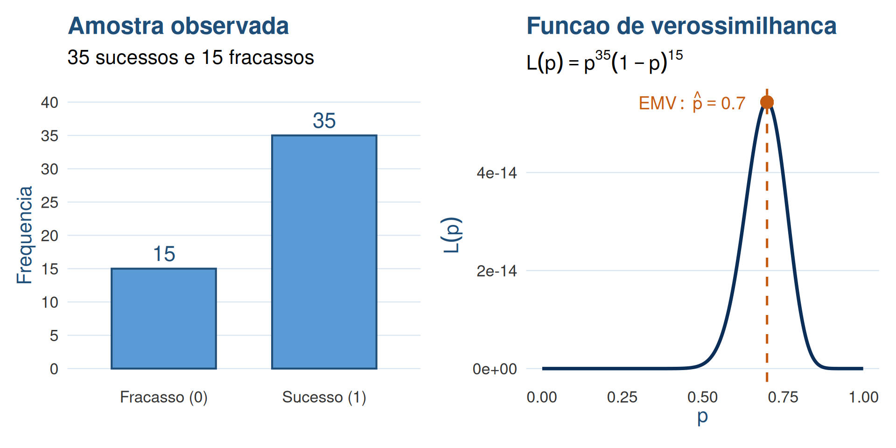
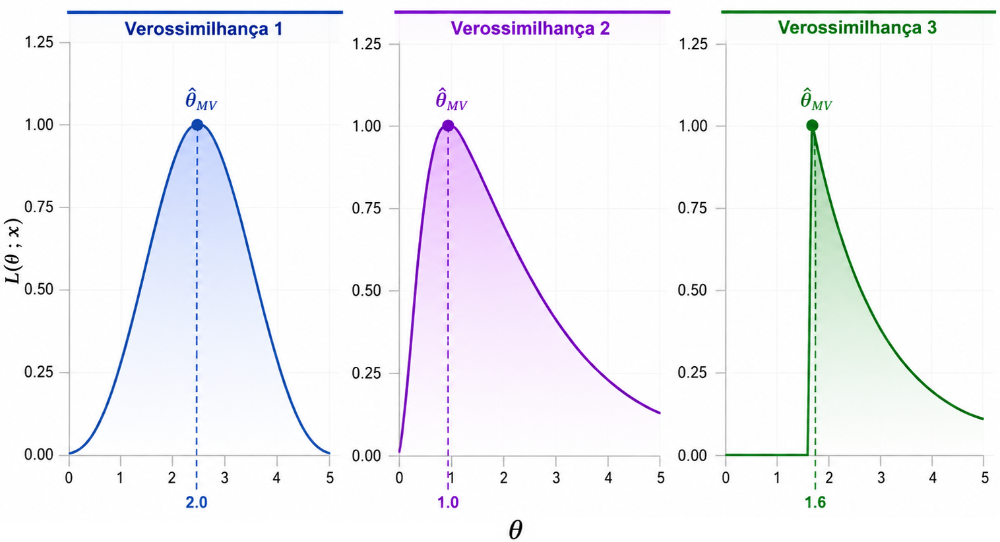
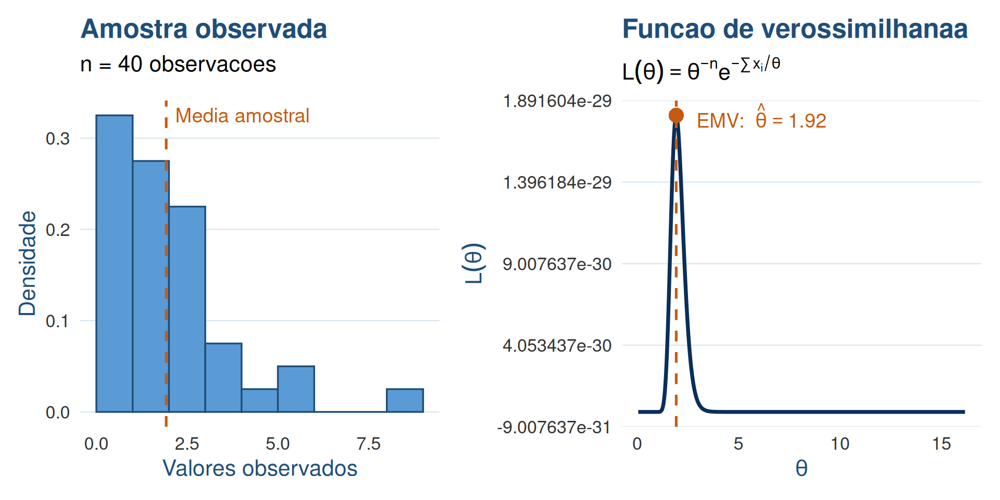
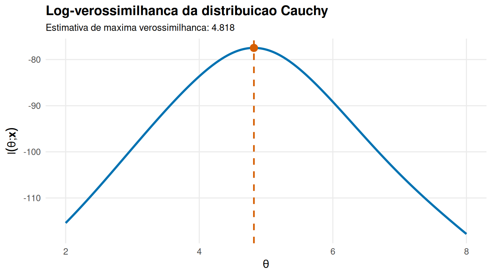

O Método da Máxima Verossimilhança
Existe um método melhor para estimar um parâmetro?
ESTAT0078 – Inferência I
Prof. Dr. Sadraque E. F. Lucena
http://sadraquelucena.github.io/inferencia1
No Método dos Momentos
Considere uma amostra aleatória \(X_1,\ldots,X_n \stackrel{iid}{\sim} f(x;\theta)\), com \(\theta\in\Theta\). Aqui, os estimadores são obtidos por meio da correspondência entre momentos populacionais e momentos amostrais: \[ \mu'_k = E(X^k) \quad \longleftrightarrow \quad M'_k = \frac{1}{n}\sum\limits_{i=1}^n X_i^k. \]
Se desejamos estimar um único parâmetro, o estimador é obtido como solução de \[ E(X) = \overline{X}. \]
- Já no Método da Máxima Verossimilhança, a pergunta muda: qual é o valor de \(\theta\) mais provável de ter gerado a amostra que observamos?
Distribuição conjunta de uma amostra
Seja \[X_1,\ldots,X_n \stackrel{iid}{\sim} f(x;\theta), \quad \theta\in\Theta.\]
Como há independência, a distribuição conjunta da amostra é o produto das funções de probabilidade (ou densidades) individuais: \[f(x_1, \ldots, x_n;\theta) = \prod\limits_{i=1}^n f(x_i;\theta).\]
- Visão da Probabilidade: O valor de \(\theta\) é conhecido/fixo e avaliamos o comportamento/probabilidade de diferentes valores aleatórios \((x_1, \ldots, x_n)\).
Função de Verossimilhança (\(L\))
No método da máxima verossimilhança a mesma funão passa a se chamar Função de verossimilhança: \[ L(\theta;\mathbf{x}) = \prod\limits_{i=1}^n f(x_i;\theta), \quad \theta\in\Theta. \]
- O que muda: Agora, os valores de \(\mathbf{x} = (x_1,\ldots,x_n)\) são constantes (pois a amostra já foi observada) e a variável é o parâmetro \(\theta\).
Método da Máxima Verossimilhança
O Método da Máxima Verossimilhança consiste em escolher o valor de θ∈Θ que maximiza a verossimilhança da amostra observada, ou seja, o valor de θ que torna os dados observados mais compatíveis com o modelo.
- Matematicamente: \(\qquad\quad \widehat{\theta}_{\text{MV}} = \underset{\theta \in \Theta}{\arg\max} \, L(\theta; \mathbf{x})\)

Encontrando o Máximo da Função de Verossimilhança
Para encontrar o valor de \(\theta\) que maximiza a função de verossimilhança \(L(\theta)\), usamos as ferramentas clássicas do Cálculo:
- Encontrar os pontos críticos: calcular a 1ª derivada e resolver \(L'(\theta)=0.\)
- Verificar se é um máximo: avaliar a 2ª derivada no ponto crítico \(L(\widehat{\theta})<0.\)
- Como a função de verossimilhança \[ L(\theta;\mathbf{x}) = \prod\limits_{i=1}^n f(x_i;\theta) \] é um produtório de \(n\) termos, sua derivada é quase impossível de resolver analiticamente.
Solução: Função de Log-Verossimilhança (\(\ell\))
\[\ell(\theta;\mathbf{x}) = \log L(\theta;\mathbf{x}) = \log\left[\prod\limits_{i=1}^n f(x_i;\theta)\right] = \sum_{i=1}^n \log f(x_i;\theta)\]
A função de log-verossimilhança tem duas vantagens principais: \(\left(\prod\limits_{i=1}^n \longrightarrow \sum\limits_{i=1}^n\right)\)
- Como o logaritmo é uma função estritamente crescente, o valor de \(\theta\) que maximiza \(L(\theta;\mathbf{x})\) é exatamente o mesmo que maximiza \(\ell(\theta;\mathbf{x})\).
- É muito mais simples derivar uma soma do que um produto. O que facilita encontrarmos o ponto de máximo.
A equação que será resolvida passa de \(L'(\theta)=0\) para \(\ell'(\theta)=0\).
Procedimento para Obtenção do EMV
- Construção da função de verossmilhança \(L(\theta;\mathbf{x})\)
- Obtenção da log-verossimilhança \(\ell(\theta;\mathbf{x})\)
- Calcular \(\ell'(\theta;\mathbf{x})\) (chamada de função score)
- Resolver \(\ell'(\theta;\mathbf{x}) = 0\) para achar o(s) ponto(s) crítico(s)
- Confirmar se \(\ell''(\widehat{\theta};\mathbf{x}) < 0\) para garantir que \(\widehat{\theta}\) é ponto de máximo
Exemplo 3.1
Seja \(X_1, \ldots, X_n \stackrel{\text{iid}}{\sim} \text{Bernoulli}(p)\), com \(p \in (0, 1)\) e \(f(x; p) = p^x (1-p)^{1-x}\) para \(x \in \{0, 1\}\). Determine o estimador de máxima verossimilhança (EMV) para \(p\).
Suponha que observamos a amostra:
Exemplo 3.2
Seja \(X_1, \ldots, X_n \stackrel{\text{iid}}{\sim} \text{Exp}(\theta)\), com \(f(x; \theta) = \frac{1}{\theta} e^{-x/\theta}\). Encontre o EMV de \(\theta\).
Suponha que observamos a amostra:

Exemplo 3.3
Considere uma variável aleatória discreta \(X \in \{1, 2\}\) com a seguinte Função de Probabilidade: \[ P(X = x; \theta) = \theta^{2 - x} (1 - \theta)^{x - 1}, \quad \text{para } x \in \{1, 2\} \text{ e } 0 < \theta < 1 \]
- Se \(x = 1 \implies P(X = 1) = \theta\)
- Se \(x = 2 \implies P(X = 2) = 1 - \theta\)
Dada uma amostra aleatória \(X_1, \dots, X_n \stackrel{\text{iid}}{\sim} P(X = x; \theta)\), obtenha o EMV de \(\theta\).
Exemplo 3.4
Considere uma amostra aleatória \(X_1, \ldots, X_n \stackrel{\text{iid}}{\sim} \text{Cauchy}(\theta, 1)\), onde \(\theta \in \mathbb{R}\) é o parâmetro de localização (desconhecido). A função de densidade é dada por:\[f(x; \theta) = \frac{1}{\pi \left[ 1 + (x - \theta)^2 \right]}, \quad x \in \mathbb{R}\]
- Log-Verossimilhança: \(\quad \ell(\theta; \mathbf{x}) = -n \ln \pi - \sum_{i=1}^n \ln \left[ 1 + (x_i - \theta)^2 \right]\)
- Função Score: \(\quad U(\theta; \mathbf{x}) = \frac{d}{d\theta}\ell(\theta; \mathbf{x}) = \sum_{i=1}^n \frac{2(x_i - \theta)}{1 + (x_i - \theta)^2} = 0\)
- Não é possível isolar \(\theta\) na equação \(U(\theta; \mathbf{x}) = 0\). A solução exige o uso de algoritmos numéricos de otimização (como Newton-Raphson ou BFGS).
Exemplo 3.4
# 1. Amostra
dados <- c(4.726, 4.800, 6.257, 4.410, 2.905, -11.649, 3.912, 5.450, 3.140, 3.669,
12.488, 3.784, 4.792, 6.035, 13.402, 4.809, 4.931, 5.387, 17.705, -0.213,
4.689, 5.466, 4.965, 4.831, 5.265, -17.383, 7.783, 4.695, 10.947, 4.434)
# 2. Definição da Log-Verossimilhança Negativa
log_verossimilhanca_negativa <- function(theta, x) {
l <- - length(x) * log(pi) - sum(log(1 + (x - theta)^2))
return(-l) # A função optim() só encontra ponto de mínimo, minimizar uma função
} # negativa é o mesmo que encontrar seu máximo
# 3. Otimização Numérica (Iniciando a busca em theta = 0)
resultado <- optim(par = 0, fn = log_verossimilhanca_negativa, x = dados, method = "BFGS")
theta_emv <- resultado$par
cat("EMV Numerico obtido pelo R:", round(theta_emv, 4), "\n")EMV Numerico obtido pelo R: 4.8183 Exemplo 3.4
library(ggplot2)
# Grade de valores de theta
grid_theta <- seq(2, 8, length.out = 300)
# Valores da log-verossimilhança
log_lik_val <- sapply(grid_theta, function(t) -log_verossimilhanca_negativa(t, dados))
# Dados para o gráfico
dados_grafico <- data.frame(theta = grid_theta, log_verossimilhanca = log_lik_val)
# Gráfico
ggplot(dados_grafico, aes(x = theta, y = log_verossimilhanca)) +
geom_line(linewidth = 1.2) +
geom_vline(xintercept = theta_emv, linetype = "dashed", linewidth = 0.9) +
geom_point(aes(x = theta_emv, y = -resultado$value), size = 3.5) +
labs(x = expression(theta), y = expression(ell(theta * ";" * bold(x))),
title = "Log-verossimilhança da distribuição Cauchy",
subtitle = paste0("Estimativa de máxima verossimilhança: ", round(theta_emv, 3))) +
theme_minimal(base_size = 13) +
theme(plot.title = element_text(face = "bold"), plot.subtitle = element_text(size = 11),
panel.grid.minor = element_blank())Exemplo 3.4

MM vs. EMV
| Dimensão | Método dos Momentos | Máxima Verossimilhança |
|---|---|---|
| Princípio Teórico | Amostra reflete a população \((E[X^k] = M'_k)\) | Dados observados foram gerados pelo \(\theta\) mais plausível |
| Ponto de Partida | Momentos teóricos e amostrais | Modelo probabilístico / Distribuição conjunta |
| Ferramenta Matemática | Sistemas de equações algébricas | Otimização (Cálculo / Derivadas / Fronteiras) |
| Resolução Numérica | Rara (geralmente analítico) | Frequente em modelos complexos (ex: Gama) |
| Casos de Fronteira | Não lida bem | Identifica máximos em bordas de suportes |
Fim